Why Quasar?
Quasar is the only noSQL analytics system that satisfies all 8 essential characteristics. Read more

 




Fast Optimization Cross Compiler.
The fast cross-compiler can push down analytics to highly irregular targets like APIs and noSQL query languages.
With Quasar's flexible plugin-based architecture, it's easy to add new sources of data e.g. databases, data warehouses, cloud APIs, etc.
Move the computation to the data.
- No setup, ETL or data normalization
- Natively exposes rich, nested post-relational data models.
- Don't lose information by transforming data into flat tables.

Use next-gen business intelligence tools.
Quasar is designed to power next-gen analytics, visualization, and reporting solutions that understand today's rich data models.
SlamData is an open source tool that natively supports Quasar, allowing non-technical people to see and understand their NoSQL data.